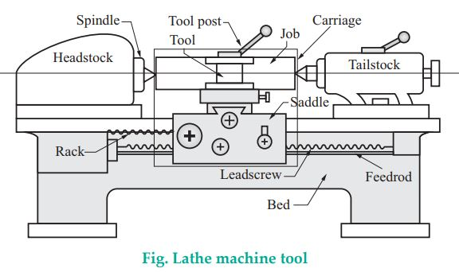

Q.1 Write brief description of lathe machine and its components.
Ans. Introduction to lathe : The lathe is a machine tool on which metal machining is done by combining
the rotation of the job with a perpendicular feed of the tool. It is the oldest and the most common
type of machine tools.
Though primarily designed to produce cylindrical surfaces with a single point cutting tool, a
lathe can be used for most other operations done on general purpose machine tools directly or with
attachments. Now a days, large number of modern machine tools are found, still the lathe machines
are used in all modern tool rooms, repair shops and training workshops.
Construction : The figure shows the general layout of lathe, its major parts are :

1. Headstock : It houses the power source, all the power transmission, gear box and the spindle. It
is fixed at the left hand side of the bed.
2. Tailstock : It is situated towards the right hand side of the bed and houses the tailstock spindle
for the purpose of locating the long components by the use of centres.
3. Carriage : It provides the necessary longitudinal motion to the cutting tool, to generate the
surfaces.
4. Bed : It provides a supports for all the elements present in a machine tool. Beds are generally
constructed using cast iron or alloy cast iron which consists of alloying elements such as nickel,
chromium and molybdenum.
5. Columns : The columns are those in which the bed is fixed.
6. Work-holding devices : They are normally used for suitable location, effective clamping and
support when required. e.g. chuck, mandrel etc.
7. Lead screw : The lead screw is used for thread cutting. It could be used for feeding the cutting
tool in a direction parallel to the axis of rotation, many a times a separate feed rod is provided
for this function.
8. Backgear : A backgear is the gear which is mounted at the back of the headstock that allows the
chuck to rotate slowly with greatly increased power.
Working principle :
* Lathe is a machine tool which holds the workpiece securely between the two rigid and strong supports called as centers or in a chuck or face plate, while the workpiece revolves.
* The cutting tool is rigidly held and supported in a tool post and is fed against the revolving workpiece. While the workpiece revolves about its own axis, the tool is made to move in parallel or at an inclination with the axis of a material to be cut.
* Hence the main function of a lathe is to remove metal from a workpiece and to give it a desired shape and size.
* The material from the workpiece is removed in the form of chips. Also, to cut the material properly, the tool material should be harder than the workpiece material.